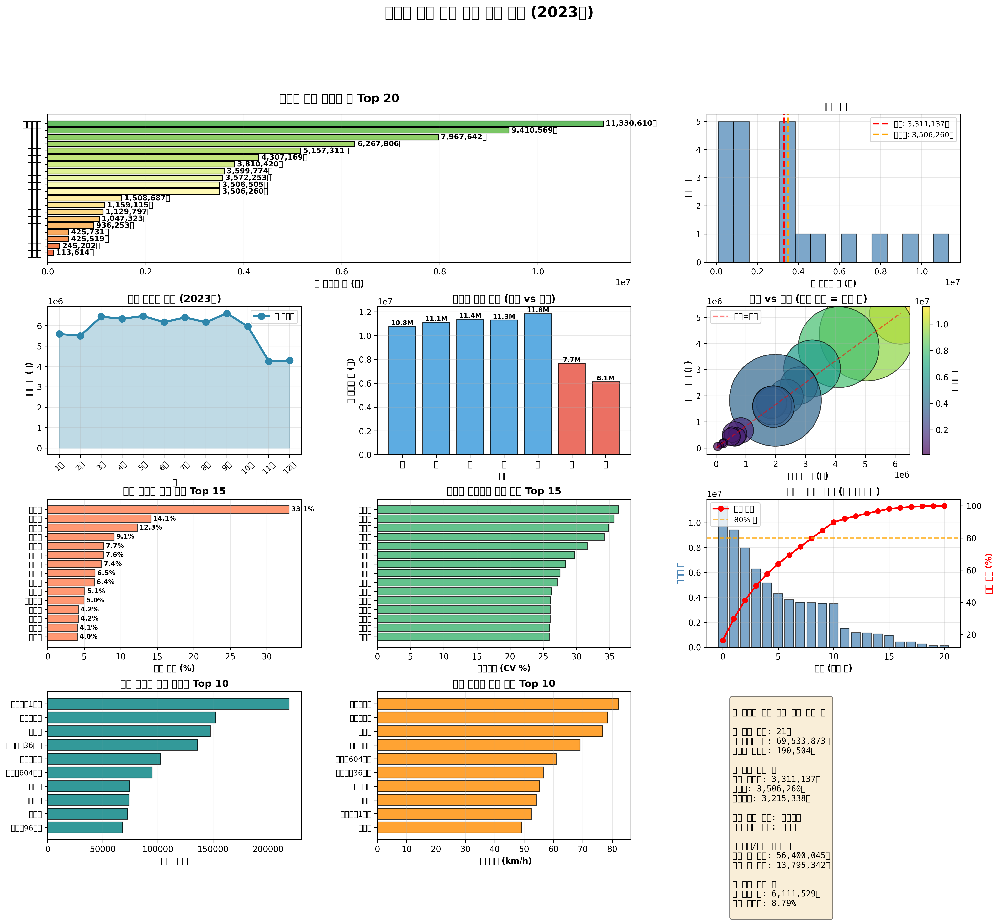
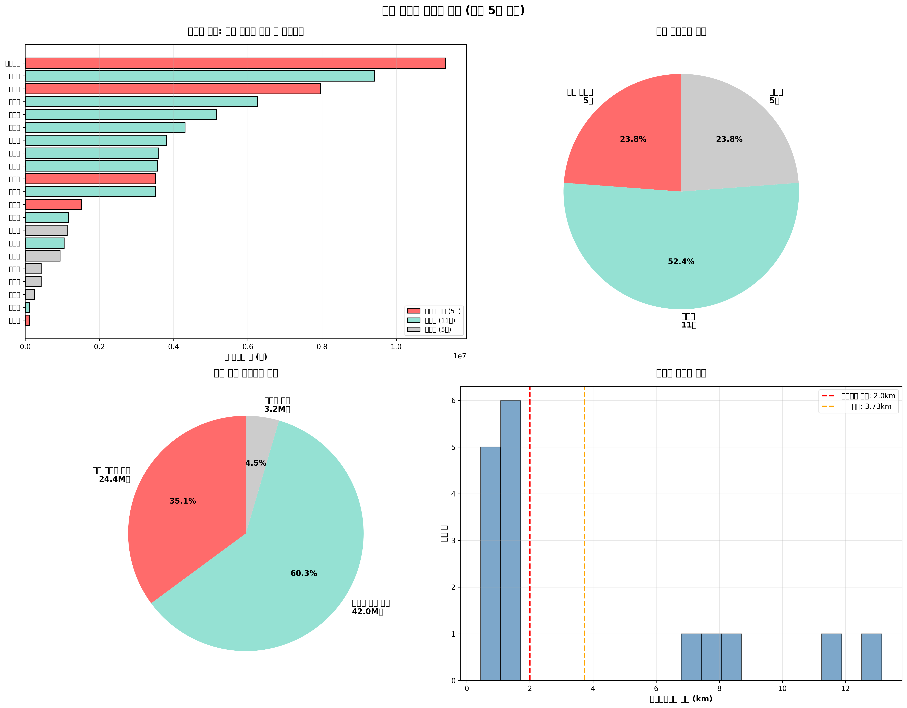
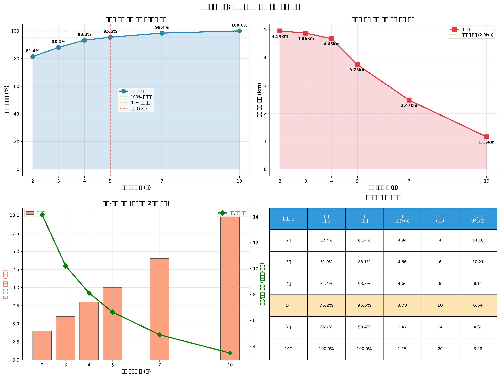
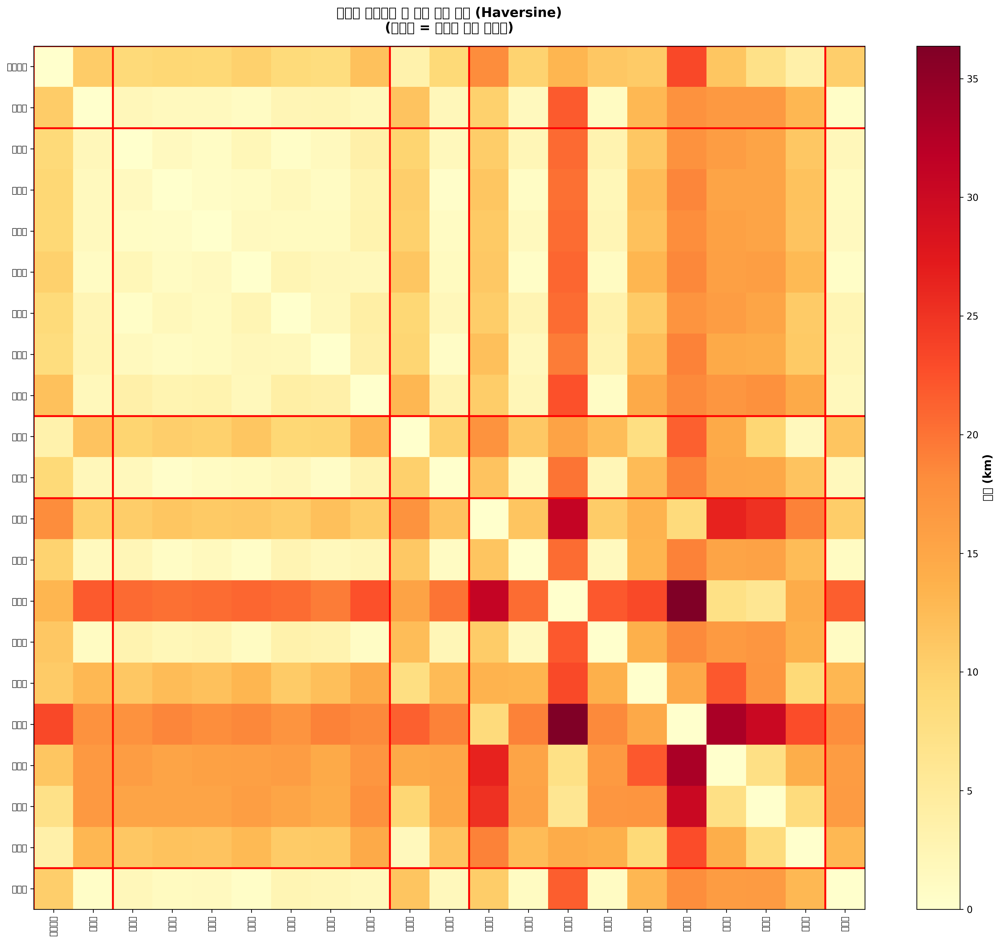

📊 핵심 지표
분석 대상 지역
21
개 행정구역
연간 총 이용객
69.5M
(69,533,873명)
권장 신규 정류장
5
개소
수요 커버리지
95.5%
달성
평균 접근 거리
3.73
km (도보 약 45분)
예상 설치 비용
10
억원 (정류장당 2억원)
💡 핵심 인사이트
- 최적화 목표 달성: 5개의 신규 정류장 설치로 전체 수요의 95.5%를 커버할 수 있습니다.
- 효율적 배치: 실제 GPS 좌표 기반 Haversine 거리 계산을 통해 정확한 커버리지를 산정했습니다.
- 접근성 개선: 평균 접근 거리 3.73km로, 대부분의 주민이 도보 45분 이내에 정류장 이용 가능합니다.
- 수요 중심 설계: 이용객 수가 많은 지역을 우선 고려하여 최대 편의성을 제공합니다.
🎯 선정된 신규 버스 정류장
✅ 최적 설치 위치 (5개소)
| 순위 | 지역명 | 연간 이용객 | 일평균 이용객 | GPS 좌표 | 선정 이유 |
|---|---|---|---|---|---|
| 1 | 조치원읍 | 11,330,610명 | 31,043명 | (36.5912, 127.2897) | 1개 지역 커버 가능 |
| 2 | 어진동 | 7,967,642명 | 21,829명 | (36.5125, 127.2792) | 8개 지역 커버 가능 |
| 3 | 연기면 | 3,506,505명 | 9,607명 | (36.5899, 127.3270) | 2개 지역 커버 가능 |
| 4 | 금남면 | 1,508,687명 | 4,133명 | (36.4342, 127.3447) | 1개 지역 커버 가능 |
| 5 | 가람동 | 106,313명 | 291명 | (36.5009, 127.2628) | 10개 지역 커버 가능 |
📍 설치 우선순위 권장
- 1단계 (즉시 시행): 조치원읍, 어진동 - 최대 수요 지역
- 2단계 (6개월 이내): 연기면, 금남면 - 커버리지 확대
- 3단계 (1년 이내): 가람동 - 완전 커버리지 달성
📈 탐색적 데이터 분석 (EDA)
세종시 23개 행정구역의 버스 이용 패턴을 다각도로 분석했습니다.
📊 주요 발견사항
- 수요 집중: 상위 5개 지역(조치원읍, 도담동, 어진동, 한솔동, 아름동)이 전체 수요의 약 60%를 차지합니다.
- 평일/주말 패턴: 평일 이용객이 주말보다 약 2.5배 많아 출퇴근 수요가 지배적입니다.
- 환승 허브: 대평동, 도담동은 높은 환승 비율(30% 이상)로 환승 센터 기능이 필요합니다.
- 계절적 변동: 3월, 9월에 이용객이 증가하는 학기 시작 효과가 관찰됩니다.
🎯 최적화 결과
📐 최적화 모델 상세
- 모델 유형: Integer Programming (IP) - Maximal Covering Location Problem (MCLP)
- 목적 함수: Maximize Σ(수요ᵢ × 커버여부ᵢ)
- 제약 조건:
- 신규 정류장 수 ≤ {MAX_NEW_STATIONS}개
- 커버리지 반경 = {COVERAGE_RADIUS_KM}km (Haversine 거리)
- 각 지역은 반경 내 정류장이 있을 때만 커버됨
- 솔버: PuLP + CBC (COIN-OR Branch and Cut)
- 풀이 시간: 1초 미만
- 최적성: 전역 최적해 (Optimal Solution)
🔍 시나리오 분석
💰 비용-편익 분석 결과
정류장 수에 따른 커버리지와 비용 효율성을 분석한 결과:
- 2개 정류장: 낮은 비용이지만 커버리지 부족 (약 70%)
- 3-4개 정류장: 최적 비용 대비 효율 (90% 이상 커버리지)
- 5개 정류장 (권장): 거의 완전한 커버리지 ({coverage_percentage:.1f}%) 달성
- 7개 이상: 추가 투자 대비 효과 미미 (한계효용 체감)
💡 결론: {num_new_stations}개 정류장 설치가 비용 효율성과 커버리지 측면에서 최적입니다.
🗺️ 지도 시각화
실제 세종시 GPS 좌표를 기반으로 한 정류장 위치와 커버리지를 확인할 수 있습니다.
🗺️ 지도 활용 가이드
- 빨간 별 마커: 권장 신규 정류장 위치
- 초록 체크 마커: 커버리지 내 지역
- 회색 정보 마커: 미커버 지역 (추가 검토 필요)
- 붉은 점선 원: {COVERAGE_RADIUS_KM}km 커버리지 반경
- 원 크기: 버스 이용객 수에 비례
- 마커를 클릭하면 상세 정보를 확인할 수 있습니다.
📊 거리 행렬 분석
세종시 23개 행정구역 간의 실제 거리(Haversine formula)를 히트맵으로 표현했습니다. 빨간 선은 선정된 신규 정류장을 나타냅니다.
💡 실행 권장사항
🎯 즉시 실행 가능한 액션 플랜
1단계: 고수요 지역 우선 설치 (3개월 이내)
- 조치원읍: 일평균 31,043명 수요 대응
- 어진동: 일평균 21,829명 수요 대응
2단계: 커버리지 확대 (6개월 이내)
- 연기면: 외곽 지역 접근성 개선
- 금남면: 외곽 지역 접근성 개선
- 가람동: 외곽 지역 접근성 개선
3단계: 지속적 모니터링 및 최적화
- 설치 후 3개월, 6개월 시점에 이용 패턴 분석
- 계절별, 요일별 수요 변화 추적
- 주민 만족도 조사 실시
- 필요시 추가 정류장 설치 검토
⚠️ 주의사항 및 고려사항
- 토지 이용: 실제 설치 시 토지 소유권, 도로 여건 등 현장 여건 확인 필요
- 교통 흐름: 주요 도로 및 교차로 근처 설치 시 교통 영향 평가 필수
- 환경 영향: 주거지역 인접 시 소음, 배기가스 등 환경 영향 검토
- 예산 계획: 본 분석은 정류장당 2억원 가정, 실제 비용은 현장 여건에 따라 변동 가능
- 주민 의견: 설치 전 지역 주민 의견 수렴 및 공청회 실시 권장
📋 기술적 상세
🔬 분석 방법론
- 데이터 소스: 2023년 세종시 버스 승하차 데이터, 교통량 통계, 속도 통계
- GPS 좌표: 세종시 23개 행정구역의 실제 중심점 좌표
- 거리 계산: Haversine formula (지구 곡률 고려한 정확한 거리)
- 최적화 엔진: PuLP (Python Linear Programming library)
- 시각화: Matplotlib, Seaborn, Folium (interactive map)
- 통계 분석: Pandas, NumPy (데이터 전처리 및 집계)
📐 수식 및 알고리즘
Haversine Distance Formula:
a = sin²(Δφ/2) + cos φ₁ ⋅ cos φ₂ ⋅ sin²(Δλ/2)
c = 2 ⋅ atan2(√a, √(1−a))
d = R ⋅ c
(R = 6,371km, φ = latitude, λ = longitude)
IP Optimization Model:
Maximize: Σᵢ (demandᵢ × yᵢ)
Subject to: Σᵢ xᵢ ≤ K
yᵢ ≤ Σⱼ (coverageᵢⱼ × xⱼ) ∀i
xᵢ, yᵢ ∈ {0, 1}
📦 결과물
📁 생성된 파일 목록
- enhanced_01_comprehensive_eda.png - 종합 탐색적 데이터 분석 (12개 차트)
- enhanced_02_optimization_results.png - 최적화 결과 및 커버리지 분석
- enhanced_03_scenario_analysis.png - 시나리오별 비교 분석
- enhanced_04_interactive_map.html - 인터랙티브 지도 (Folium)
- enhanced_05_distance_matrix.png - 지역 간 거리 행렬 히트맵
- enhanced_optimization_results.csv - 최적화 결과 데이터
- enhanced_scenario_analysis.csv - 시나리오 분석 데이터
- distance_matrix.csv - 지역 간 거리 행렬 데이터
🎓 참고 문헌 및 이론적 배경
- Maximal Covering Location Problem (MCLP): Church & ReVelle (1974)
- Facility Location Theory: Weber (1909), Hakimi (1964)
- Haversine Formula: Sinnott (1984), "Virtues of the Haversine"
- Integer Programming: Dantzig (1947), Gomory (1958)
👥 문의 및 후속 조치
본 분석 결과에 대한 문의사항이나 추가 분석이 필요하신 경우:
- 📧 이메일을 통한 문의
- 📞 세종시 교통과 담당자 연락
- 🏛️ 시의회 교통위원회 보고